Inhalt Index DeskTop Bronstein

 Geometrie Vektoralgebra und analytische Geometrie Analytische Geometrie des Raumes Gerade und Ebene im Raum
Geometrie Vektoralgebra und analytische Geometrie Analytische Geometrie des Raumes Gerade und Ebene im Raum


Die Winkel zwischen zwei Ebenen, gegeben durch die zwei Gleichungen
A1x+B1y+C1z+D1 = 0 und A2x+B2y+C2z+D2 = 0 werden berechnet nach der Formel
| 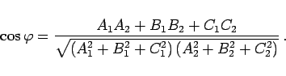 | (3.406a) |
Sind die Ebenen durch die Vektorgleichungen 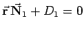 und  gegeben, dann gilt:
gegeben, dann gilt:
| 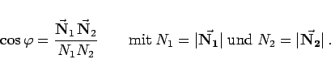 | (3.406b) |
(Zum Skalarprodukt zweier Vektoren s. Skalarprodukt und Skalarprodukt in affinen Koordinaten, zur Ebenengleichung in Vektorschreibweise s. Vektorielle Gleichungen.)
Die Koordinaten des Schnittpunktes dreier Ebenen, gegeben durch die drei Gleichungen
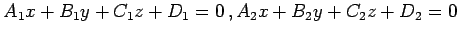 und A3x+B3y+C3z+D3=0 werden berechnet nach den Formeln
| 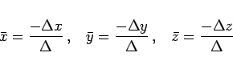 | (3.407a) |
mit
| 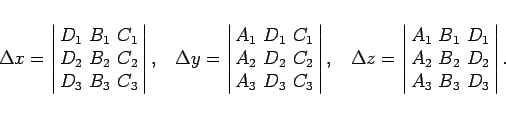 | (3.407b) |
Drei Ebenen schneiden sich in einem Punkt, wenn 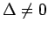 ist. Ist 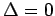 und wenigstens eine Unterdeterminante zweiter Ordnung 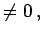 dann sind die Ebenen einer Geraden parallel; sind alle Unterdeterminanten 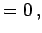 dann gehen die Ebenen durch eine Gerade hindurch.
| 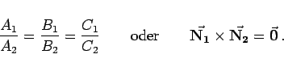 | (3.408) |
| 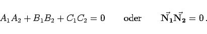 | (3.409) |
Die Koordinaten des Schnittpunktes von vier Ebenen, gegeben durch die vier Gleichungen 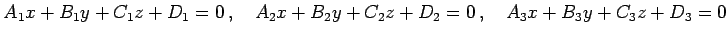 und 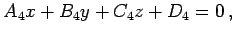 werden berechnet, indem zuerst der Schnittpunkt dreier beliebiger Ebenen bestimmt wird. In diesem Falle 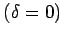 ist die vierte Gleichung eine Folge der übrigen drei Gleichungen.
Vier Ebenen gehen dann und nur dann durch einen Punkt, wenn gilt:
| 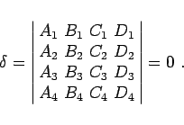 | (3.410) |
Wenn die Parallelitätsbedingung erfüllt ist und die Gleichungen der Ebenen gegeben sind durch die Gleichungen
| 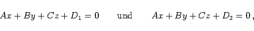 | (3.411) |
dann beträgt der Abstand
| 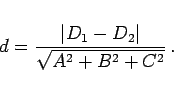 | (3.412) |